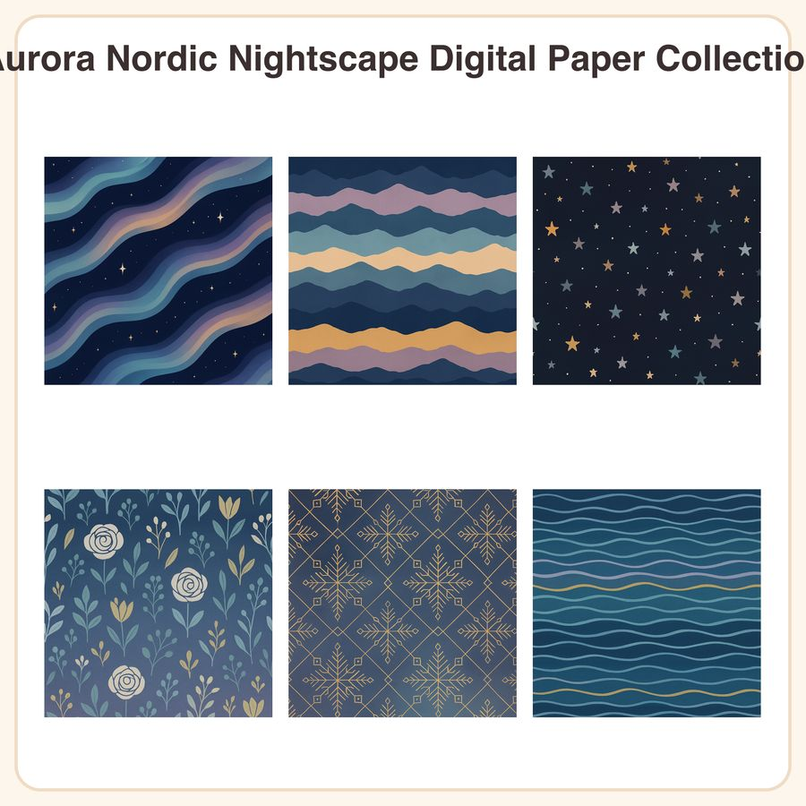

$4.99
View on Etsy✨ Bring a fresh, on-trend Nordic winter palette to your projects — no snowflake cliché in sight! This collection features 6 seamless patterns in muted midnight navy, dusty lavender, soft teal, and warm gold accents, perfect for Nordic-style scrapbooking, junk journals, and holiday branding. What's included: • 6 seamless patterns as 3072px square JPEGs (12x12in, 300dpi) • 6 repeatable PNG tiles for seamless digital use • Patterns: Aurora borealis ribbons glowing across a navy sky, layered mountain silhouette stripes, scattered star dot grid, soft floral bloom motif, gold geometric snowflake lattice linework, and cool-toned fjord water ripple texture File formats & sizes: • JPEG: 3072x3072px (12x12in @ 300dpi) • PNG: seamless repeatable tiles, transparent-ready where applicable How to use: Open in any design or photo-editing software (Photoshop, Procreate, Canva, etc.) to create scrapbook pages, junk journal spreads, gift wrap, packaging, planner covers, and more. Files are print-ready at 12x12in. License: Personal and small-business commercial use permitted (up to 500 finished units). Do not resell, share, or redistribute the digital files themselves. Honest note: These designs were created by our shop with the help of AI tools and refined for clean, seamless, print-ready results. Instant digital download — no physical item will be shipped.